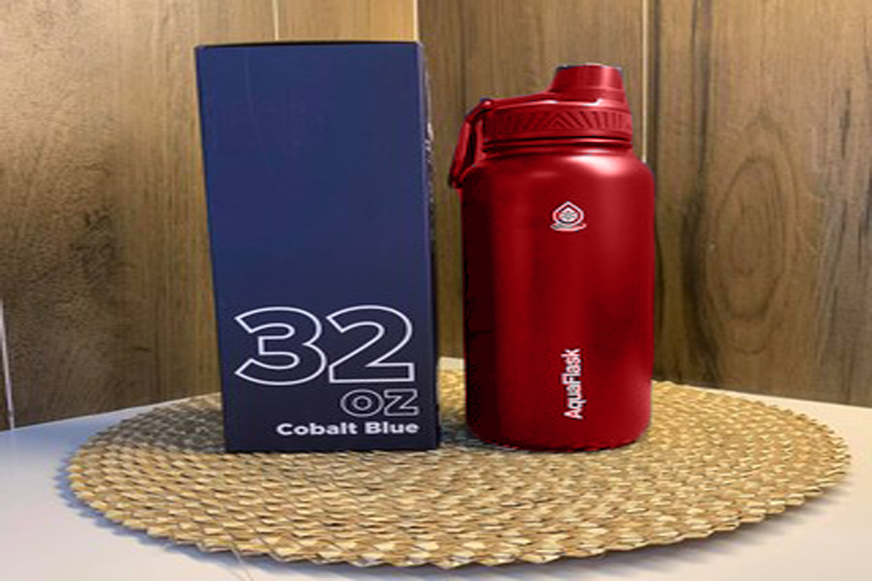
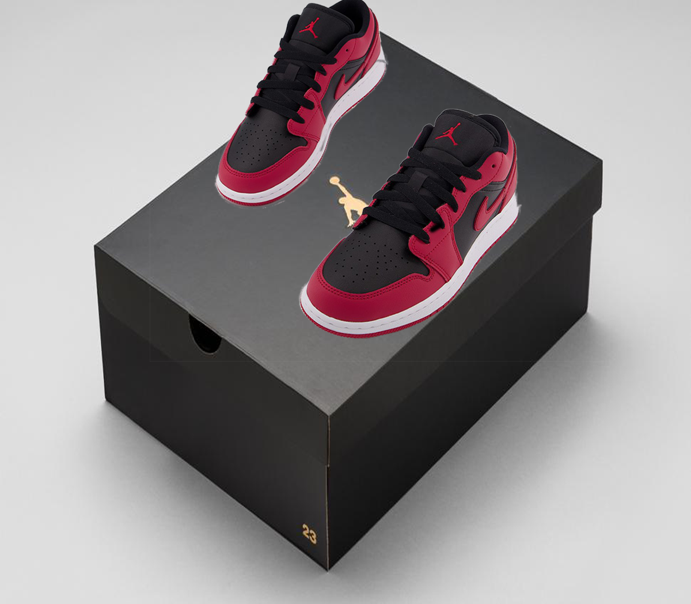
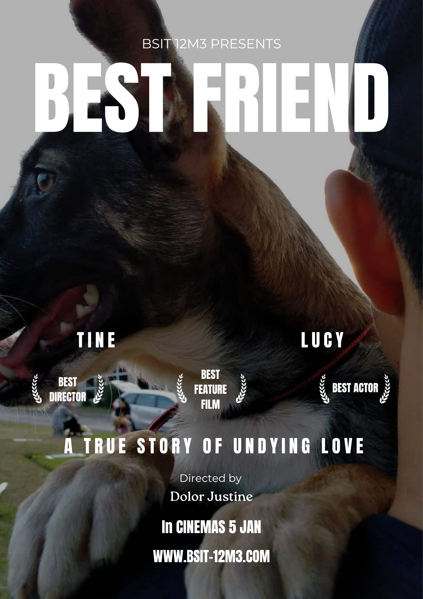
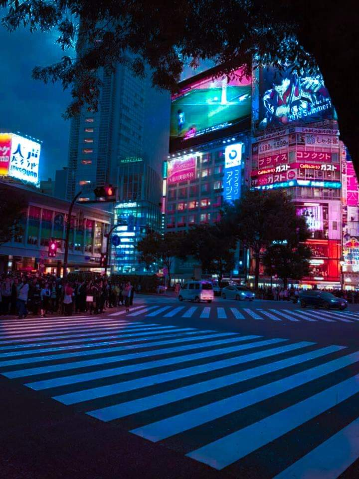
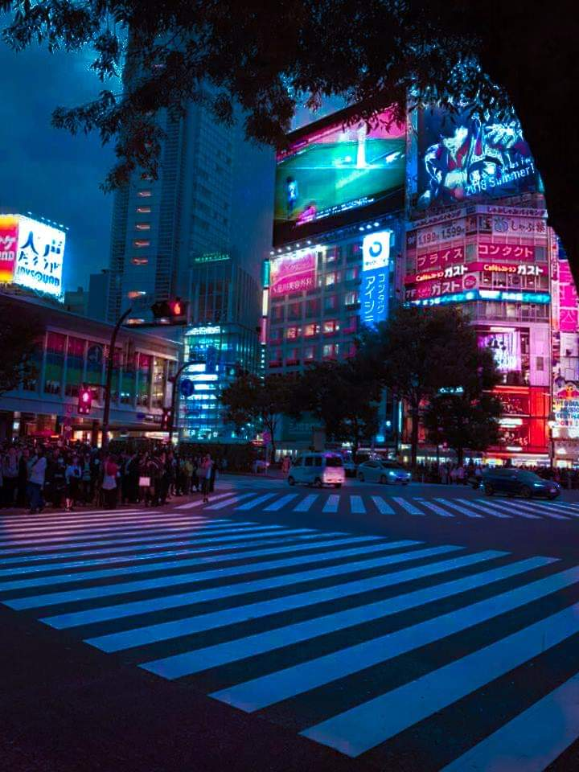
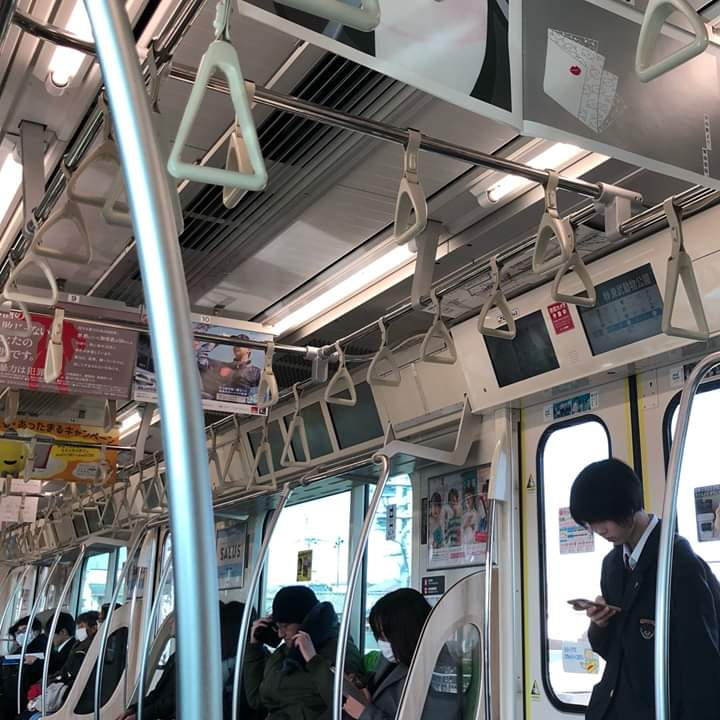
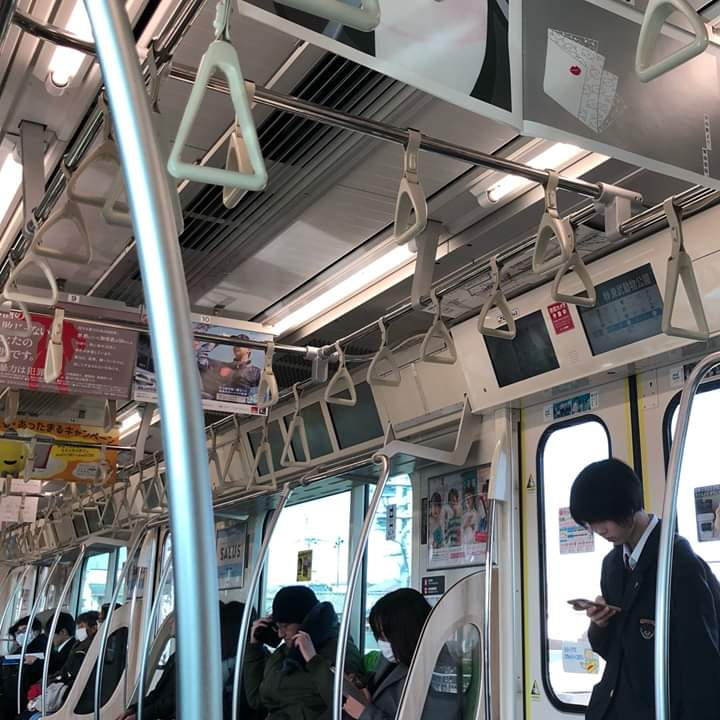

MY PERSONAL SKILLS
Languages and frameworks
- Java
- C
- Javascript
- Typescript
- Python
- HTML/css
- LUA
Softwares and platforms
- Adobe Applications
- Visual Studio
- Eclipse
- Windows and PowerShell
- Fusion360
- Simplify3D
Hardware and miscellanous
- Printers maintenance
- Pc repair and assembly
- Social media management
- Fluent english speaker
- Logic and problem solving
- Photographic skills
- Creative design skills
MY WORKS THROUGHOUT VISUAL DESIGN
Here's a list of my works throughout this semester!
Photo Collage

In this activity, we were tasked to create our own photo collage, which is actually enjoyable despite the amount of layers needed in order to create this photo collage.
Tourist Spot Collage
In this activity, this is to create another collage but including lasso.

Lasso
Using lasso tool on this activity, it's a useful tool for removing the subject from background!
Eye Dropper

Learn More!
Eyedropper tool is one of the useful tools in the arsenal of Photoshop, it allows the user to pick a color in another image!
Magic Wand

Learn More!
The Magic Wand tool automatically selects an object or area of your image, using machine learning to discern what you might be trying to select.
Patch Tool

Eyedropper tool is one of the useful tools in the arsenal of Photoshop, it allows the user to pick a color in another image!

MOVIE POSTER

Learn More!
Creating a movie poster using multiple images and adding type to create emotion.
PHOTO MOSAIC

Adobe Photoshop is a powerful tool that can be used for complex image editing and manipulation tasks such as creating a photo mosaic.
Fun facts!
- I like to dress elegantly, every time is possible.
- I'm part of different groups, including Photography, Developing and etc.
- I can recognize almost any bigbike model i see, and I especially like japanese big motor bikes.
- Even if I'm not a teen anymore, I often use my free time to play videogames.
- I collect a lot of things, from shoes to shirts to caps.
- I'm a tech addicted, but also an environment addicted. So I avoid to buy things continuously.
- My nickname, Tine, comes from my shortened name, and was my first gamertag back in 2010.
- I listen to music of all genres, and I particularly like Hip-Hop and classical music.
- I prefer dogs over cats and mountain over sea.
GALLERY
Here's some of my Photography shots!

 

 
